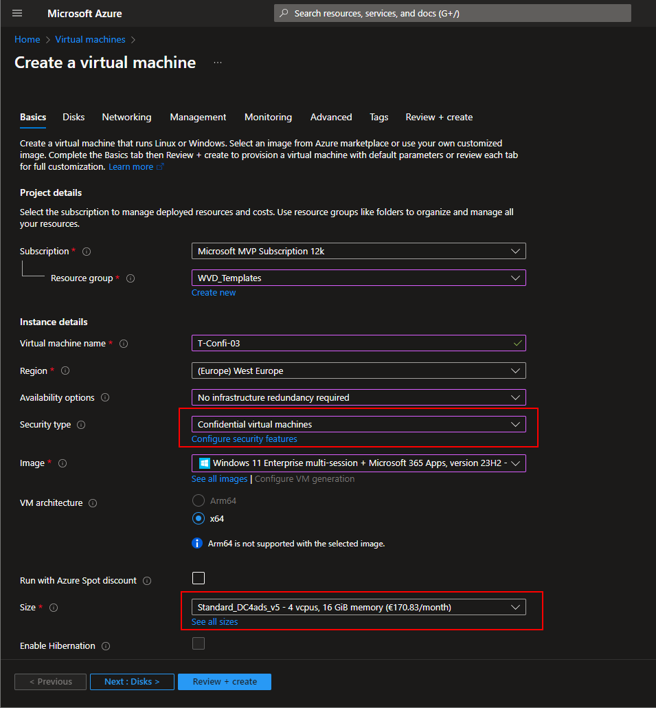
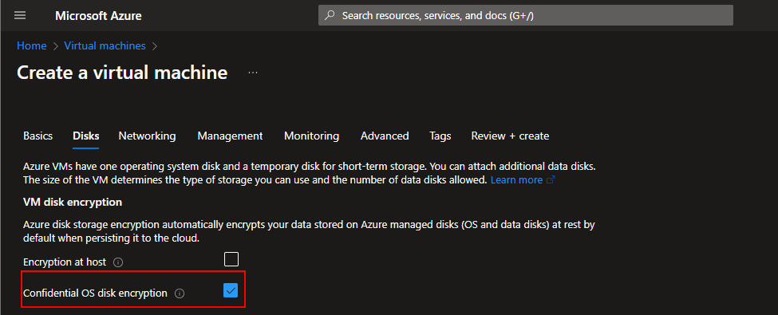
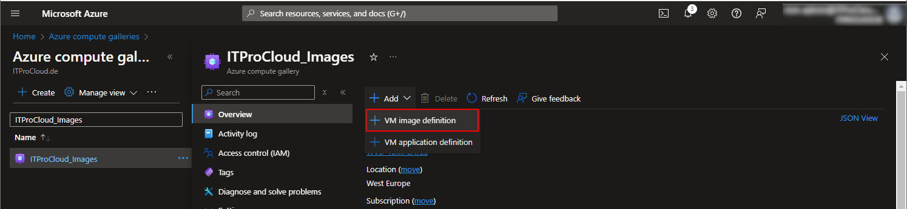
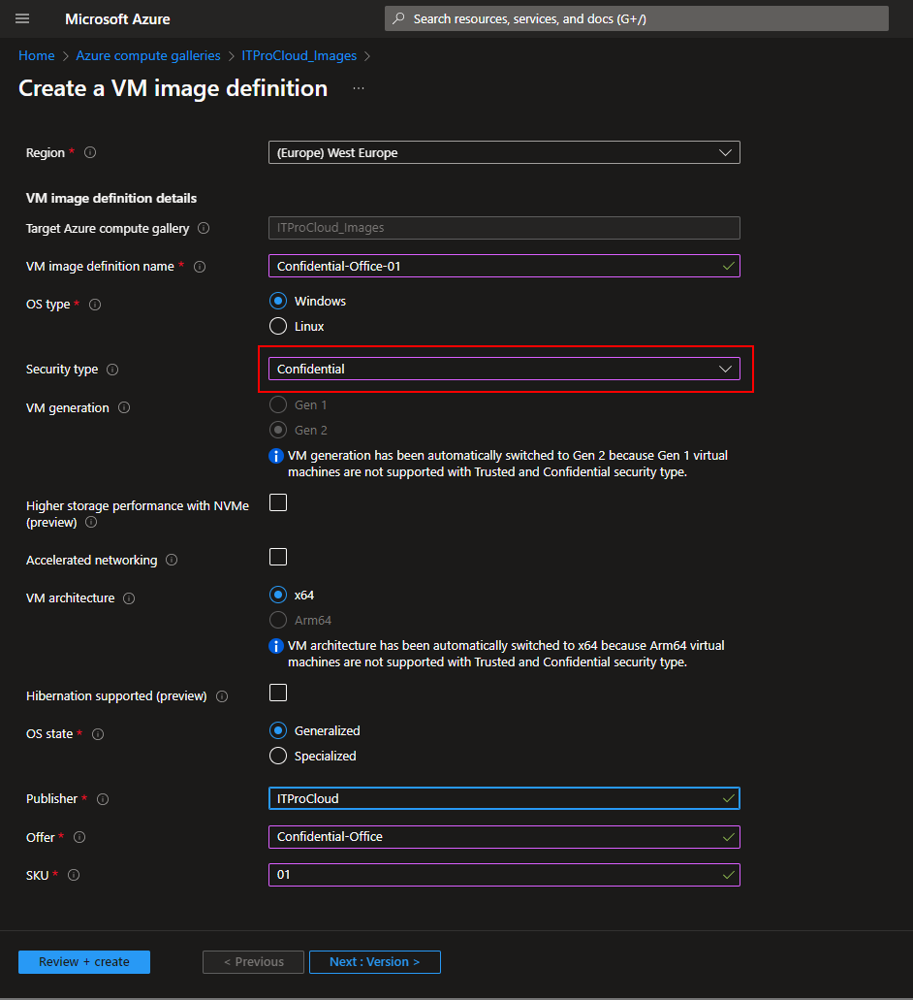
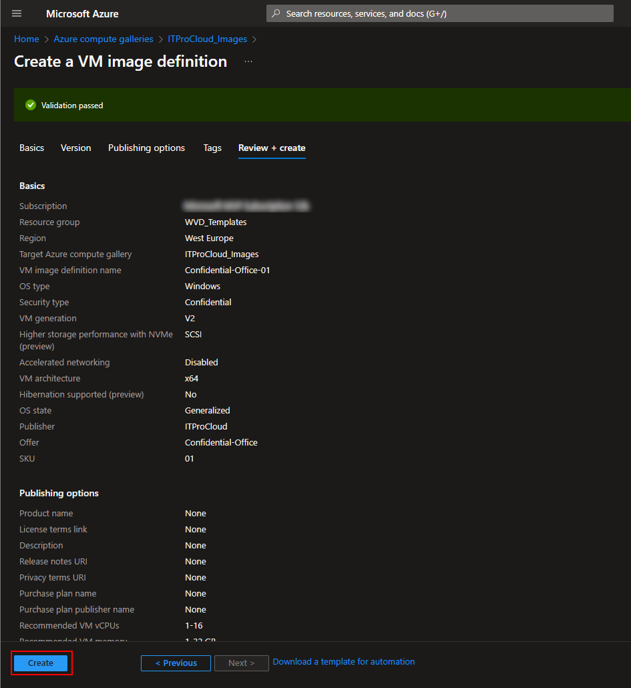
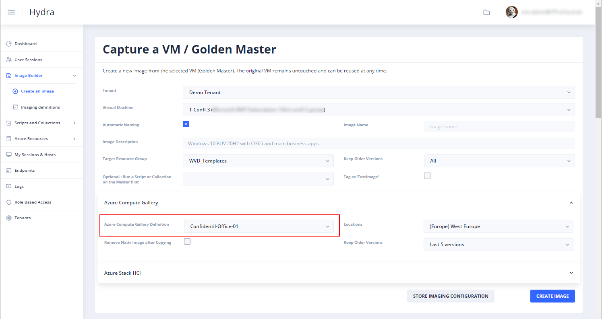
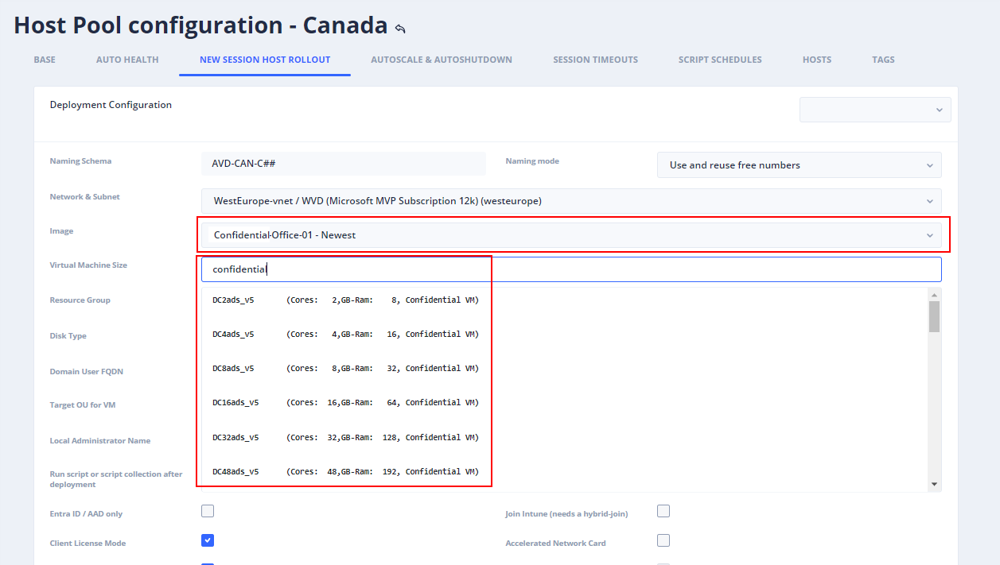

How to image a Confidential Golden Master VM and deploy confidential Session Hosts for Azure Virtual Desktop

Azure confidential VMs offer strong security and confidentiality for customers by isolating data. That can also make sene for Azure Virtual Desktop. One of my favorite deployment methods is the Golden Master apporach with Hydra for Azure Virtual Desktop. Hydra allows image creation without losing the Golden Master. So, a Golden Master can be updated and imaged unlimitedly. Tip: Imaging, including patching, can be automated and scheduled with Hydra.
Note: Hydra version 1.0.7.3 or newer is needed for confidential support. To update Hydra: Click on the avatar (roboter icon) in the upper right corner and select: "Update Engine". After a while, reload the Hydra Portal website.
First, we create a Golden Master:
- Create a Golden Master. Ensure that you create the Golden Master as a Confidential VM. Select a confidential VM size and security type Confidential virtual machines  To encrypt also the OS disk, select Confidential OS disk encryption:  Configure the other settings.
- Install all applications and updates
- Do some configurations
Confidential images can only be stored in specific Azure compute gallery definitions. Create a new gallery definition for confidential VM: - Use an existing compute gallery or create a new compute gallery - Click on Add -> VM image definition  - The security type must be Confidential  - Enter a name and fill out the fields Publisher, Offer, and SKU (the combination of publisher, offer, and SKU must be unique in the gallery) - Click on review and create to create the gallery definition 
To create an image, go to your Hydra installation and open Image Builder -> Create an image - Select your confidential Golden Master from the virtual machine list - Select the resource group of the Golden Master VM - Select the compute gallery definition in the Azure Compute Gallery section - Configure the locations where the image should be available - Click on Create Image

Important: The golden master must also be a confidential VM. The encryption configuration of the OS disk is also stored and will be used by rolling out session hosts based on that image. Hint: If the OS disk is encrypted, the imaging process will take longer. A clone is created during the imaging (and later deleted), and the disk is decrypted. This will take a while.
After an image is created, we can configure the rollout configuration of our confidential host pool. - In Hydra: Dashboard -> Your host pool -> Configuration -> New Session Host Rollout - Configure all settings - Select a confidential virtual machine size (type confidential in the field to show the sizes):  - Save - From the session host list of the pool, click on the plus icon to deploy confidential hosts - Done
Hint: There is another option for non-trusted-launch VMs: This kind of VM-images can be stored to a Confidential Supported gallery definition with Hydra. Finally, you can create new hosts based on that Confidential suported Gallery Definition Versions.